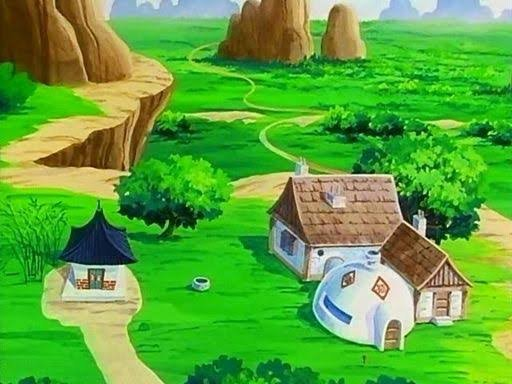
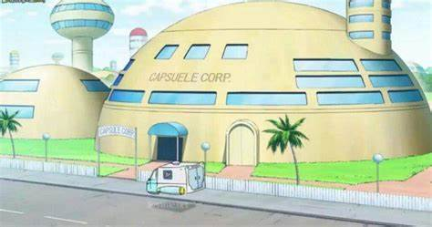
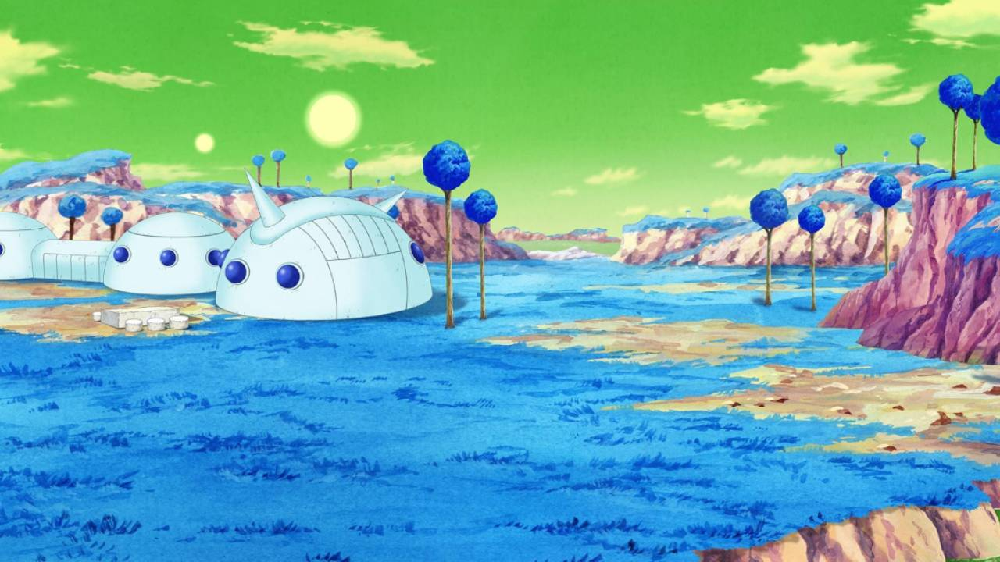
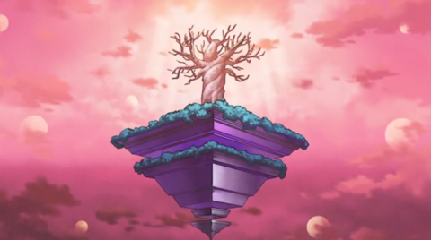
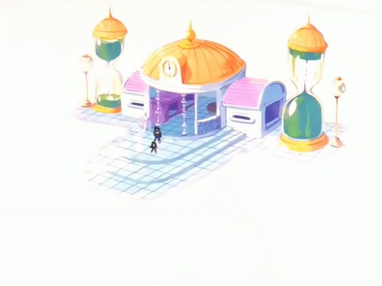

Ubicaciones Icónicas de Dragon Ball
Monte Paoz

La Montaña Baozi (パオズ山 Paozu Yama¿?, Montaña Bollo), también conocida como Monte Paoz en el doblaje hispanoamericano, es la región montañosa y ubicación en la que Goku fue criado por el Abuelo Gohan y es donde comienza la historia de Dragon Ball.
Fue inspirado por las montañas en las que recorre el mítico personaje Sun Wukong, en la novela china de Viaje al oeste. La Montaña Baozi es principalmente conocida por varios monstruos que rodean la zona como dinosaurios y entre otras criaturas.
Corporación Cápsula

La Corporación Cápsula (カプセルコーポレーション Kapuseru Kōporēshon¿?, Capsule Corporation o simplemente Capsule Corp.) es una compañía fundada y dirigida por el Dr. Brief, padre de Bulma en el Año 712. En Dragon Ball GT pasa a ser presidida por Trunks. La Corporación se basa y toma su nombre de las cápsulas Hoi Poi creadas asimismo por su fundador el Dr. Brief. La sede de la empresa se encuentra en la Capital del Oeste y además es el hogar de la familia de Bulma.
Planeta Namek

El planeta posee una atmósfera respirable, lo que lo hace habitable para especies que requieran oxígeno para vivir. Así mismo, la mayor parte de la superficie del planeta se compone de un conjunto de islas conectadas entre sí por un enorme océano que abarca todo el planeta. Las islas más grandes albergan pequeñas aldeas donde los Namekianos viven. Es un planeta con una vegetación promedio, donde las especies que lo habitan, en lo que a la vida silvestre se refiere, están las ranas, peces y dinosaurios.
Templo de Bills

El templo está situado en un árbol gigante, el cual a su vez se encuentra plantado en la punta de una gran roca, la cual está en la parte central de la base de una gigantesca pirámide flotante invertida; a su alrededor hay un extenso y natural valle, diseñado a la manera de una especie de parque en el que son relativamente abundantes los arbustos y árboles, también hay un lago que está abastecido de peces y otras comidas (huevos, platos de comida, etc.). Cuando Beerus no destruye planetas, duerme durante muchos años allí en una gran roca flotante en una cámara de piedra donde pone bombas como alarmas.
El templo está repleto de caminos, fuentes, estatuas y parques, teniendo inclusive un acuario con peces y una terraza sin techo en una cueva.
Habitación del Tiempo

Es una dimensión vacía e inmensa en un plano existencial aislado al que se conoce. Consta de una entrada (Atalaya de Kami), la cual también es la salida, pero si esta es destruida, jamás se podrá entrar o salir de nuevo, a menos que quienes estén en dicha dimensión sean lo bastante poderosos para abrir un portal que conecte temporalmente dicha dimensión con la Atalaya de Kami.